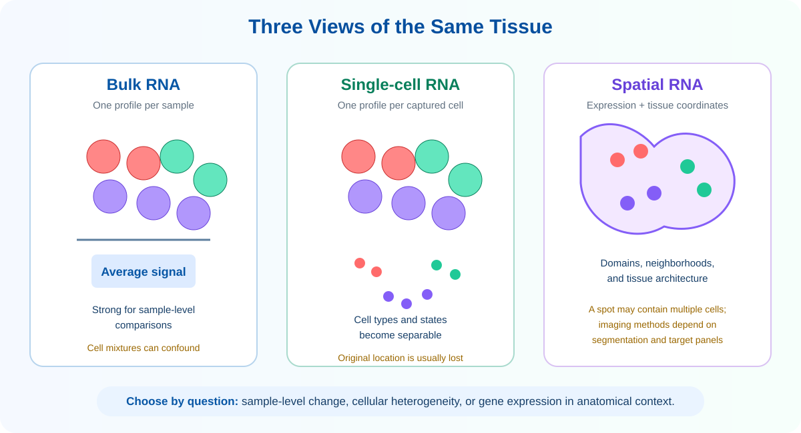
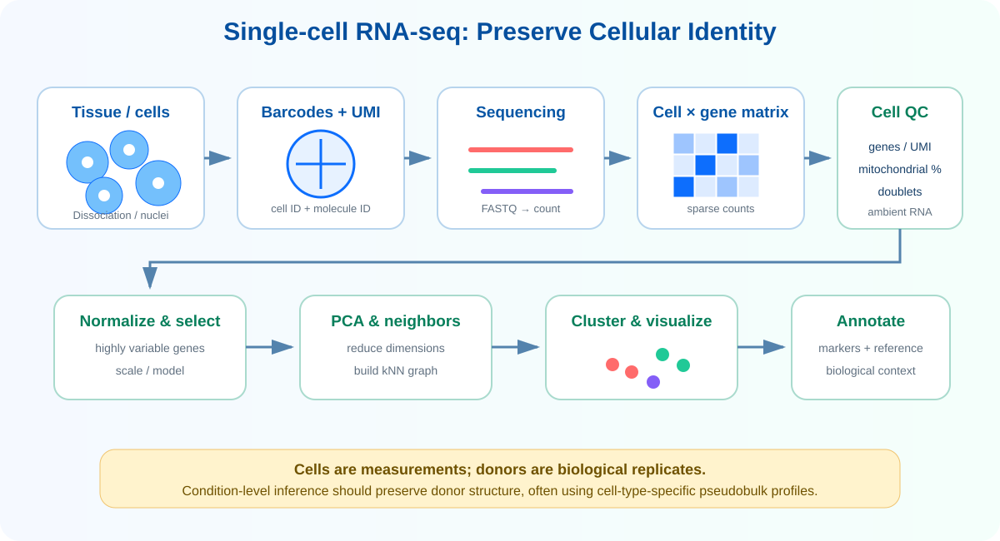

Learning Objectives
- Bulk, single-cell 및 spatial transcriptomics가 서로 다른 biological resolution을 제공한다는 점을 설명할 수 있다.
- Cell barcode와 UMI가 cell × gene count matrix를 만드는 원리를 이해한다.
- Low-quality cell, doublet, ambient RNA와 dissociation bias를 설명할 수 있다.
- Normalization, highly variable gene, PCA, neighbor graph, clustering 및 UMAP의 역할을 구분할 수 있다.
- Cluster와 cell type이 같은 개념이 아니며 marker와 reference를 함께 이용해 annotation해야 함을 이해한다.
- 세포 수가 아니라 donor 수가 condition comparison의 biological replication을 결정한다는 점을 설명할 수 있다.
- Spatial transcriptomics의 sequencing-based와 imaging-based 전략을 비교할 수 있다.
- UMAP 거리, trajectory, cell–cell communication 및 spatial neighborhood의 해석 한계를 이해한다.
1. Why Single-cell Transcriptomics?
Bulk RNA-seq은 sample 전체의 평균 발현을 안정적으로 비교하지만 서로 다른 cell type과 state의 신호가 섞입니다. Single-cell RNA-seq(scRNA-seq)은 각 포획 세포에 barcode를 붙여 희귀 세포, 세포 상태의 연속성 및 같은 cell type 안의 이질성을 분리합니다. Spatial transcriptomics는 여기에 조직 내 좌표를 더하여 어떤 세포와 발현 program이 어디에 위치하는지 연구합니다.

| 질문 | 적합한 접근 |
|---|---|
| 질환 조직 전체의 평균 pathway가 변했는가? | Bulk RNA-seq |
| 어떤 immune cell subtype이 증가했고 각 세포 상태가 어떻게 다른가? | Single-cell / single-nucleus RNA-seq |
| Tumor border와 core에서 어떤 세포가 이웃하고 어떤 gene이 국소적으로 발현되는가? | Spatial transcriptomics |
| 세포 종류와 조직 위치를 함께 가장 잘 설명할 수 있는가? | Single-cell reference와 spatial data의 통합 |
2. From Sample to Cell × Gene Matrix

Cells or nuclei?
살아있는 세포를 dissociation하여 포획합니다. Cytoplasmic RNA를 잘 관찰하지만 fragile cell 손실, stress response와 dissociation bias가 생길 수 있습니다.
동결조직 또는 분리하기 어려운 조직에서 핵을 추출합니다. Nuclear/intronic read 비율이 높고 cytoplasmic transcript가 적지만 archive tissue에 유용합니다.
Barcode와 UMI
Cell barcode는 read가 어느 cell/droplet에서 유래했는지를, UMI(unique molecular identifier)는 원래 RNA molecule을 구분합니다. 동일한 cell barcode, gene 및 UMI를 가진 read를 한 분자로 collapse하여 PCR amplification이 count를 부풀리는 영향을 줄입니다.
3. Quality Control and Normalization
QC threshold는 모든 조직에 동일한 숫자로 적용하지 않습니다. Cell type마다 RNA content와 mitochondrial transcript 비율이 다르고 tumor 또는 stressed tissue는 정상조직과 분포가 다를 수 있으므로 sample별 분포와 biology를 함께 판단합니다.1
| 지표·문제 | 관찰되는 패턴 | 해석과 대응 |
|---|---|---|
| Detected genes | 너무 적으면 빈 droplet·손상세포, 지나치게 많으면 doublet 가능 | Sample별 분포와 cell type 특성을 고려해 threshold 설정 |
| Total UMI / counts | 매우 낮은 library 또는 비정상적으로 큰 library | Low-quality cell과 multiplet 후보를 다른 지표와 함께 확인 |
| Mitochondrial fraction | 높은 mitochondrial RNA 비율 | Stress·membrane damage 가능성이 있지만 조직 특이성 고려 |
| Doublet | 서로 배타적인 lineage marker의 동시 발현, 높은 count | Expected doublet rate와 전용 탐지방법을 사용하고 검토 |
| Ambient RNA | 많은 cell에 강한 marker가 낮게 퍼짐 | Soup/background contamination 평가 및 필요 시 correction |
| Batch | Cluster가 biology보다 donor·run으로 나뉨 | 실험설계 확인 후 integration; 실제 condition signal을 과도하게 제거하지 않음 |
Why normalize single-cell counts?
세포마다 포획된 RNA와 sequencing depth가 다르므로 raw UMI count를 그대로 비교하기 어렵습니다. Library-size scaling과 log transformation 또는 count model 기반 방법으로 기술적 규모 차이를 완화합니다. 이후 cell 간 차이를 잘 설명하는 highly variable genes를 선택해 차원축소와 clustering에 사용합니다.
4. Dimensionality Reduction and Clustering
수천 개 gene으로 표현된 cell을 직접 비교하기 어려우므로 informative genes에서 PCA를 계산하고, 선택한 principal components로 k-nearest-neighbor graph를 구성합니다. Community detection은 이 graph에서 조밀한 cell 집단을 cluster로 찾습니다. UMAP 또는 t-SNE는 고차원 구조를 2차원으로 시각화합니다.
| 단계 | 역할 | 흔한 오해 |
|---|---|---|
| PCA | 주요 variation axis를 선형 조합으로 요약 | PC가 자동으로 biology를 뜻하지 않으므로 loading과 metadata 확인 |
| Neighbor graph | 비슷한 cell의 local relationship 표현 | 사용 PC와 k 값에 따라 graph가 달라짐 |
| Clustering | Graph의 community를 계산 | Cluster 수가 실제 cell type 수와 동일하지 않음 |
| UMAP / t-SNE | Local structure를 2D에 시각화 | 섬 사이 거리와 면적을 정량적 biological distance로 해석하면 안 됨 |
5. Cell Type and Cell State Annotation
Cluster에 이름을 붙이는 과정은 단순히 marker 하나를 찾는 작업이 아닙니다. Positive marker, exclusion marker, 여러 donor에서의 재현성, 조직 biology 및 reference atlas를 함께 사용합니다.
비교적 안정적인 lineage와 기능적 정체성. 예: T cell, epithelial cell, fibroblast.
Activation, cycling, stress, hypoxia처럼 여러 cell type에 걸쳐 나타날 수 있는 가변적 상태.
6. Differential Analysis: Cells Are Not Donors
한 환자에서 수천 개 cell이 얻어져도 독립적인 환자 수가 수천 명이 되는 것은 아닙니다. 같은 donor의 cell은 유전적 배경, 조직환경과 처리과정을 공유하므로 독립 관측값으로 취급하면 표본수가 과장되고 false positive가 증가할 수 있습니다.2
Cell-type-specific pseudobulk
Pseudobulk는 같은 donor와 cell type의 raw counts를 합쳐 donor-level profile을 만들고 bulk RNA-seq과 유사한 count model로 분석합니다. 충분한 donor와 cell 수, paired design 및 batch를 model에 반영할 수 있다는 장점이 있습니다.
| 질문 | 분석 단위 | 권장 접근 |
|---|---|---|
| Cluster를 특징짓는 marker는 무엇인가? | Cell, exploratory | Cluster marker test + donor별 재현성 확인 |
| 같은 cell type이 disease에서 다르게 발현하는가? | Donor | Cell-type-specific pseudobulk 또는 mixed model |
| Cell-type proportion이 condition에 따라 다른가? | Donor의 composition | Compositional model과 donor-level uncertainty |
| 한 donor 안에서 cell state가 연속적으로 변하는가? | Cell state / trajectory | Exploratory trajectory 후 donor 재현성과 independent validation |
7. Advanced Single-cell Analysis
| 분석 | 질문 | 해석상의 핵심 |
|---|---|---|
| Trajectory / pseudotime | 세포 상태가 어떤 연속적 경로로 변화하는가? | 시간을 직접 측정한 값이 아니라 expression manifold에서 추정한 순서 |
| RNA velocity | 현재 상태에서 어느 방향으로 이동할 가능성이 있는가? | Spliced/unspliced kinetics와 model assumption에 의존 |
| Cell–cell communication | 어떤 ligand–receptor pair가 cell group 사이에 존재하는가? | Expression 기반 potential interaction이며 실제 binding·signal flow의 증거는 아님 |
| Gene regulatory network | 어떤 TF와 target program이 함께 활성화되는가? | Co-expression과 motif 기반 inference; 직접적인 regulation 검증 필요 |
| Dataset integration | Donor·batch·technology를 넘어 공통 cell state를 비교할 수 있는가? | Technical variation을 줄이되 true condition-specific state를 지우지 않아야 함 |
| Multiome | 같은 cell에서 RNA와 chromatin accessibility가 어떻게 연결되는가? | Feature sparsity와 modality-specific bias를 함께 고려 |
8. Spatial Transcriptomics
Spatial transcriptomics는 gene expression과 조직 좌표를 함께 측정하여 histology, tissue domain, cell neighborhood 및 lesion boundary와 분자신호를 연결합니다. 최초의 sequencing-based spatial transcriptomics는 위치 barcode가 있는 array 위에서 tissue section의 RNA를 포획하여 expression을 좌표에 배치했습니다.3
| Sequencing-based spatial | Imaging-based spatial | |
|---|---|---|
| 원리 | 공간 barcode를 가진 spot/bead에서 RNA를 포획해 sequencing | 조직에서 fluorescent probe와 반복 imaging으로 RNA molecule을 검출 |
| Gene coverage | 비교적 넓거나 whole-transcriptome에 가까운 측정 가능 | 전통적으로 targeted panel이지만 기술에 따라 매우 큰 panel 가능 |
| 공간 단위 | Spot/bead; 한 spot에 여러 cell이 포함될 수 있음 | 개별 molecule 좌표와 cell segmentation에 기반 |
| 주요 강점 | Discovery-oriented expression profiling | 높은 spatial resolution과 세포/세포하 위치 |
| 주요 분석 | Domain detection, deconvolution, reference mapping, spatial DE | Segmentation, molecule assignment, cell typing, neighborhood analysis |
| 주요 한계 | Spot mixture, capture efficiency, tissue edge와 diffusion | Panel selection, imaging cycles, segmentation error와 autofluorescence |
Spatial analysis workflow
9. Common Limitations and Interpretation Traps
References
- Luecken MD, Theis FJ. Current best practices in single-cell RNA-seq analysis: a tutorial. Molecular Systems Biology. 2019;15:e8746.
- Squair JW, et al. Confronting false discoveries in single-cell differential expression. Nature Communications. 2021;12:5692.
- Ståhl PL, et al. Visualization and analysis of gene expression in tissue sections by spatial transcriptomics. Science. 2016;353:78–82.
- Heumos L, et al. Best practices for single-cell analysis across modalities. Nature Reviews Genetics. 2023;24:550–572.
- Amezquita RA, et al. Orchestrating single-cell analysis with Bioconductor. Nature Methods. 2020;17:137–145.
Key Takeaways
- Single-cell RNA-seq은 cell barcode와 UMI를 이용해 cell × gene count matrix를 만듭니다.
- QC threshold는 조직과 sample의 분포를 고려하여 정하며 doublet, ambient RNA와 dissociation bias를 함께 평가합니다.
- PCA, graph clustering 및 UMAP은 서로 다른 역할을 하며 cluster가 자동으로 cell type을 의미하지 않습니다.
- Cell annotation은 marker 조합, negative evidence, donor 재현성, reference 및 조직 맥락을 함께 사용합니다.
- Condition-level differential expression의 biological replicate는 cell이 아니라 donor이며 pseudobulk가 유용합니다.
- Spatial transcriptomics는 expression에 좌표를 더하지만 기술별 resolution과 capture/segmentation 한계가 있습니다.
- Trajectory, communication 및 regulatory network는 검증이 필요한 model-based hypothesis입니다.
Check Your Understanding
- Cell barcode와 UMI는 각각 무엇을 구분하나요?
- 모든 sample에 동일한 mitochondrial percentage cutoff를 적용하면 안 되는 이유는 무엇인가요?
- UMAP에서 두 cluster가 멀리 떨어졌다는 사실을 어떤 의미로 해석하면 안 되나요?
- 3명의 control과 3명의 disease에서 각 5,000개 cell을 얻었다면 condition comparison의 biological replicate 수는 얼마인가요?
- Pseudobulk matrix는 어떤 순서로 만들며 왜 donor structure를 보존하나요?
- Sequencing-based spatial spot의 signal을 단일 cell 발현으로 바로 해석하기 어려운 이유는 무엇인가요?